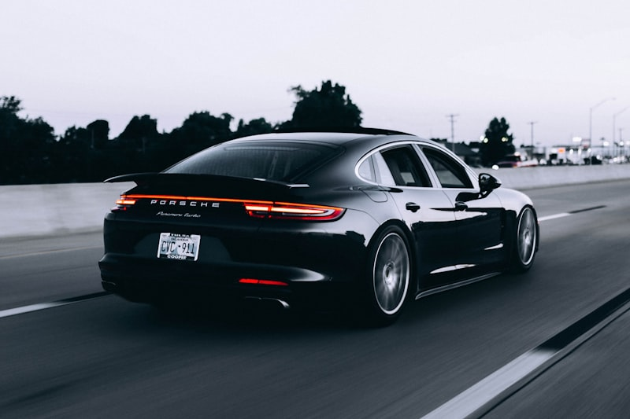

Porsche Repair & Service in Cedar Rapids
European specialist care for every Porsche model — 911, Boxster, Cayman, Cayenne, Macan, Panamera, and Taycan.
Porsche Expertise You Can Trust
Porsche vehicles are engineered to a standard most shops never encounter. From the flat-six boxer engines in the 911 and Cayman to the twin-turbo V8s in the Cayenne and Panamera, every Porsche drivetrain demands specialized knowledge and precision tooling. At Cedar Automotive, we bring European-specialist experience to every Porsche that rolls into our Cedar Rapids shop. We understand Porsche engineering inside and out, and we use manufacturer-level diagnostic equipment to service your vehicle the right way.
Whether you drive a weekend 911, a daily-driven Macan, or a high-mileage Cayenne, we provide the same level of technical care you'd expect from a Porsche dealer — at independent shop rates. We follow Porsche technical procedures, source OEM-quality parts, and keep your vehicle performing the way Stuttgart intended.
Cedar Automotive is conveniently located near Cedar Rapids Regional Airport. Need your Porsche serviced while you travel? Drop it off before your flight and pick it up when you land.
Porsche Services We Provide
- Oil service using Porsche-approved lubricants and filters
- Brake pad and rotor replacement — including PCCB ceramic brake inspection
- PDK dual-clutch transmission fluid service and mechatronic repair
- Suspension and PASM (Porsche Active Suspension Management) diagnostics and repair
- Engine repair including IMS bearing retrofit and bore scoring diagnosis
- Coolant system service — pipe replacement, expansion tank, and thermostat
- Electrical system diagnostics — DME, PSM, PCM, and module coding
- Performance tuning, exhaust upgrades, and intake modifications
- Car key and key fob programming

Why Choose Cedar Automotive for Porsche Service?
European Specialist
We focus on European vehicles every day. Our shop is equipped with the diagnostic tools, specialty sockets, and technical knowledge that Porsche repair demands — not a sideline, but a core part of what we do.
Porsche-Specific Knowledge
IMS bearings, VarioCam timing, PDK mechatronics, PASM dampers, air-oil separators — we know the systems that make Porsche vehicles unique and the failure points that require preventive attention.
Honest Approach
We explain what your Porsche needs and what it costs before any wrench turns. No upselling, no unnecessary work. You get a clear estimate and straightforward communication from start to finish.
Common Porsche Issues We Repair
Every Porsche generation has its known weak points. We have the experience and tooling to diagnose and repair these common failures before they become catastrophic.
IMS Bearing Failure
The intermediate shaft bearing in the M96 and M97 engines (996 and early 997 models) is a well-documented failure point. A failing IMS bearing can destroy the engine if not addressed. We perform IMS bearing retrofits with upgraded single-row or ceramic bearings to eliminate this risk and protect your investment.
Cylinder Bore Scoring
Cayenne and Panamera V8 engines are prone to bore scoring caused by the Lokasil cylinder liners losing their cross-hatch pattern. Symptoms include cold-start knocking and excessive oil consumption. We diagnose bore scoring with borescope inspections and advise on the best path forward, whether it's monitoring or engine repair.
Coolant Pipe Failures
Plastic coolant pipes in Cayenne and Panamera models become brittle with age and heat cycling, leading to sudden coolant leaks and overheating. We replace these with updated parts and inspect the entire cooling circuit to prevent roadside breakdowns.
PDK Mechatronic Unit
The PDK dual-clutch transmission is robust but its mechatronic valve body can develop issues that cause rough shifting, delayed engagement, or transmission fault codes. We perform PDK fluid services at the correct intervals and diagnose mechatronic problems using Porsche-specific scan tools.
Air-Oil Separator Failure
A failing air-oil separator (AOS) in flat-six Porsche engines leads to excessive crankcase pressure, oil consumption, rough idle, and white smoke from the exhaust. We replace the AOS with updated parts and inspect related vacuum lines to restore proper engine breathing.
Related Services
Porsche Service — Frequently Asked Questions
Do you have Porsche-specific diagnostic equipment?
Yes. Cedar Automotive carries professional-grade diagnostic tools that read Porsche-specific fault codes across all modern systems including DME engine management, PSM stability control, PASM adaptive suspension, and PDK transmission modules. These are the same tools used at Porsche dealerships.
How much does Porsche repair cost compared to a dealership?
Independent shops like Cedar Automotive typically save Porsche owners 30-50% over dealership rates on comparable work. We use OEM-quality parts and follow Porsche technical procedures, but without the dealership overhead built into the price. Call (319) 450-7584 for an honest estimate.
What Porsche models does Cedar Automotive service?
We service all Porsche models including the 911 (996, 997, 991, 992), Boxster, Cayman, Cayenne, Macan, Panamera, and Taycan. Whether your Porsche needs routine maintenance or specialized repair work like IMS bearing replacement or PDK service, we have the tools and knowledge to handle it.
Do you program Porsche keys and fobs?
Yes — we program Porsche keys and key fobs for all models including Cayenne, Macan, Panamera, and 911. Porsche key programming requires specialized European diagnostic equipment. We handle spare key creation and all-keys-lost situations. Call (319) 450-7584 for pricing.